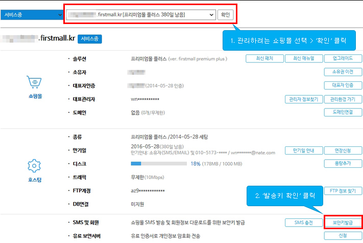

<div id="admin_member_download" class="hide">
	<table class="table_basic thl">		
		<tr class="email_download_hide">
			<th>다운로드 범위</th>
			<td>
				<div class="resp_radio">						
					<label><input type="radio" name="excel_type" value="all" checked/> 전체 ({=number_format(sc.totalcount)}명)</label>								
					<label><input type="radio" name="excel_type" value="search" /> 검색 회원 ({=number_format(sc.searchcount)}명)</label>			
				</div>
			</td>
		</tr>	
		
		<tr class="email_download_hide">
			<th>다운로드 항목</th>
			<td><button type="button" name="download_list" class="resp_btn v2">항목 설정</button></td>
		</tr>	

		<tr>
			<th>보안키 입력 <span class="required_chk"></span></th>
			<td>
				<input type="password" name="member_download_passwd" placeholder="보안키 입력" size="35" />
				<div class="resp_message v2">- 보안키는 <a href="https://www.firstmall.kr/myshop" target="_blank" class="resp_btn_txt">MY 퍼스트몰</a>에서 확인할 수 있습니다.</div>
			</td>
		</tr>	
	</table>
	
	<div class="box_style_05 resp_message">
		<div class="title">안내</div>
		<ul class="bullet_hyphen">					
			<li>보안키 발급 방법 <a href="https://www.firstmall.kr/customer/faq/1258" target="_blank" class="resp_btn_txt">자세히 보기</a></li>		
			<li>관련 법령에 의거한 귀사의 개인정보처리방침으로 개인정보를 보호 하세요.</li>		
			<li>엑셀 다운로드 내역은 <a href="/admin/excel_spout/excel_download?category=3" target="_blank" class="resp_btn_txt">회원 엑셀 다운로드</a>에서 확인할 수 있습니다.</li>	
		</ul>
	</div>
	
	<div class="footer">
		<button type="button" onclick="safeKeyCheck();" class="resp_btn active size_XL">다운로드</button>
		<button type="button" onclick="closeDialog('admin_member_download');" class="resp_btn v3 size_XL">취소</button>
	</div>
</div>

<div id="safekey_input_info" class="hide" style="padding-left:30px; padding-top:30px;">
	<div style="padding-bottom:30px; font-size:13px; color:#2d2c2d;">
		가비아회원로그인 > My퍼스트몰 > `보안키 확인`에서 찾을 수 있습니다.<br />
		(쇼핑몰 소유자의 가비아 계정으로 로그인 해야 합니다.)
	</div>
		

</div>

<!-- member/sms_auth에도 보안키 확인 방법 소스 있음-->